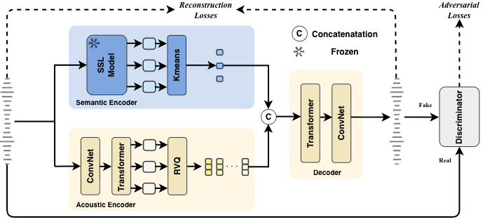

Figure 1: Overview of MuSeC. A frozen SSL encoder + k-means provides semantic tokens; an acoustic RVQ stream captures fine-grained acoustics. The two streams are concatenated and decoded for high-fidelity reconstruction.
Discrete audio tokenization is the critical interface between raw waveforms and autoregressive modeling in modern music generation, yet music exposes a persistent tension between high-fidelity reconstruction and language-model predictability. Existing reconstruction-oriented tokenizers often entangle musically salient structure with fine-grained acoustic content, producing high-entropy sequences that hinder long-range modeling, while semantic alternatives often rely on speech-derived priors or generation-focused decoders.
We propose MuSeC, a reconstruction-oriented music semantic codec that disentangles music semantic content and music acoustic content directly in mixed signals without stem separation, yielding discrete units that remain faithful to the input while becoming more amenable to language modeling. MuSeC improves reconstruction quality and significantly reduces language-model perplexity, enabling high-fidelity LLM music generation.
Table 1: High-bitrate reconstruction comparisons. Replace audio paths with your real samples.
| Sample | Ground Truth | MuSeC | XCodec-YuE | MuCodec-LeVo |
|---|---|---|---|---|
| sample1 | ||||
| sample2 | ||||
| sample3 |
Table 2: Low-bitrate reconstruction comparisons.
| Sample | Ground Truth | MuSeC | Baseline A | Baseline B |
|---|---|---|---|---|
| sample1 | ||||
| sample2 |
Table 3: “Full” uses both semantic+acoustic streams; “Semantic-only” reconstructs with semantic tokens only (or a semantic-dominant configuration), illustrating disentanglement.
| Sample | Ground Truth | MuSeC-Full | MuSeC-Semantic-only | Baseline Semantic-only |
|---|---|---|---|---|
| sample1 | ||||
| sample2 |
Table 4: Summary of MuSeC vs baselines across semantic probing, LM friendliness, and reconstruction.
| Codec | Token Rate | Codebooks | Semantic / Acoustic Content | LM Friendliness | Reconstruction | |||||||
|---|---|---|---|---|---|---|---|---|---|---|---|---|
| MTT AP ↑ | Chords AUC ↑ | Lyrics Score ↑ | Top-1 ↑ | Top-5 ↑ | Top-10 ↑ | PPL ↓ | PESQ ↑ | STOI ↑ | Mel-L1 ↓ | |||
| XCodec-YuE | 50 | 8×1024 | 0.347 | 0.884 | 0.348 | 0.466 | 0.762 | 0.857 | 7.719 | 1.642 | 0.617 | 1.905 |
| MuCodec-LeVo | 25 | 1×16385 | 0.294 | 0.865 | 0.264 | 0.342 | 0.525 | 0.611 | 2.327 | 1.167 | 0.375 | 1.419 |
| MuSeC | 25 | 1×2048 + 16×1024 | 0.346 | 0.894 | 0.365 | 0.615 | 0.888 | 0.944 | 1.995 | 2.201 | 0.683 | 0.883 |
@inproceedings{musec2026,
title = {Rethinking Music Tokenization: A Semantic Codec for High-Fidelity LLM Music Generation},
author = {Anonymous Authors},
booktitle = {Interspeech},
year = {2026}
}